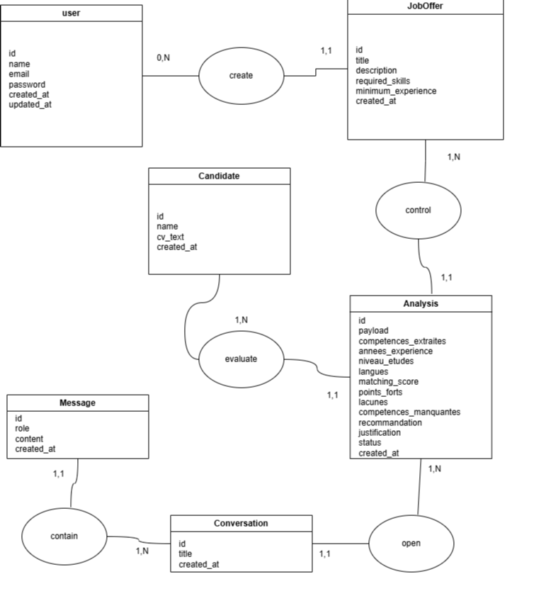
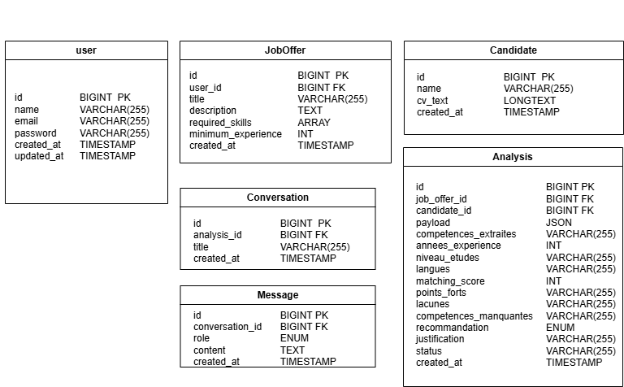

Assistant IA de Présélection RH
Yassine BENESSAHRAOUI
Juin 2026
Formation — Conception & Développement d'Applications
Soumettre une offre + un CV → analyse structurée en quelques secondes

Entités principales : USER, OFFRE, CANDIDAT, ANALYSE, AGENT_CONVERSATION, AGENT_CONVERSATION_MESSAGE

Colonnes JSON :
required_skills (offres)competences_extraiteslanguespoints_fortslacunescompetences_manquantesENUMs :
recommandation : convoquer / attente / rejeterstatus : pending / completed / failedrole : user / assistantagent_conversations et agent_conversation_messages sont gérées automatiquement par laravel/ai.
Couche 1 — Sortie structurée
AnalyseCvJob asynchrone (queue database)laravel/aiCouche 2 — Agent conversationnel
RemembersConversations pour la mémoire persistanteGetCandidateAnalysis, GetJobRequirements, CompareCandidatesfeatureAI/* — main protégé, merge manuelContrat JSON produit par le LLM à partir du CV et de l'offre :
{
"competences_extraites": ["PHP", "Laravel", "MySQL"],
"annees_experience": 5,
"niveau_etudes": "Master",
"langues": ["Français", "Anglais"],
"matching_score": 78,
"points_forts": ["Architecture MVC", "API REST"],
"lacunes": ["Pas de CI/CD", "Pas de tests"],
"competences_manquantes": ["Docker"],
"recommandation": "convoquer",
"justification": "Profil correspond à 78% des critères..."
}Pourquoi pas un simple if/else ?
status: pending (dispatch) → AnalyseCvJob (queue) → status: completed
Tool signature :
class GetCandidateAnalysisTool
{
public function handle(int $candidatId): Analyse
{
return Analyse::with(['candidat', 'offre'])
->whereHas('offre', fn($q) => $q->where('user_id', auth()->id()))
->where('candidat_id', $candidatId)
->firstOrFail();
}
}« Le candidat a 10 ans d'expérience en Python. » — ❌ Donnée fabriquée
Tool appelle la BDD → réponse basée sur l'analyse réelle ✅
Mémoire : deux questions sur le même candidat sans perdre le contexte
Automatisé par TalentMatch
Gardé sous contrôle RH
Stack moderne · Workflow professionnel · Code défendable